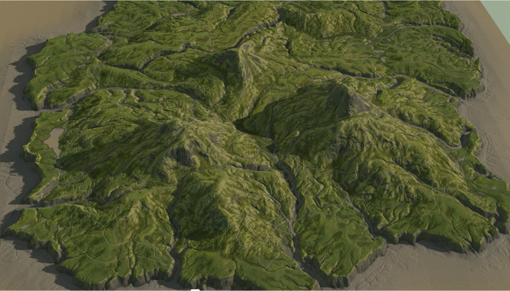
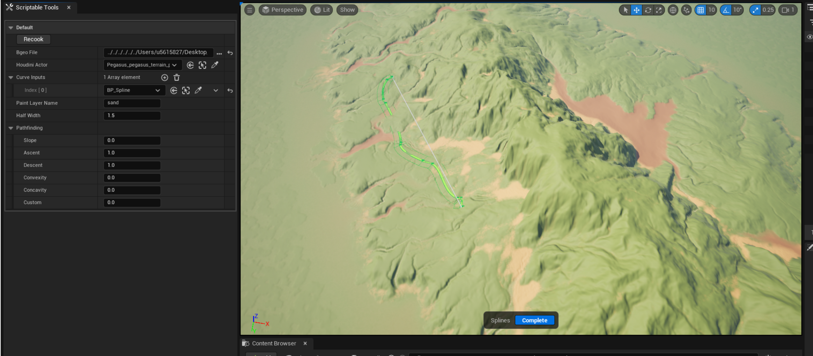
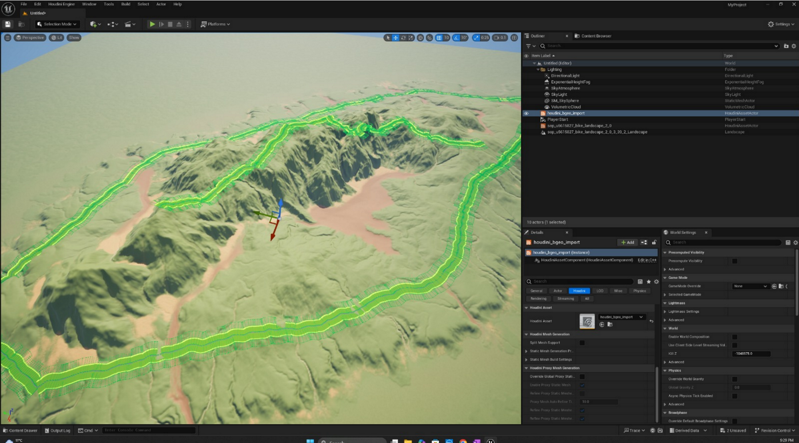
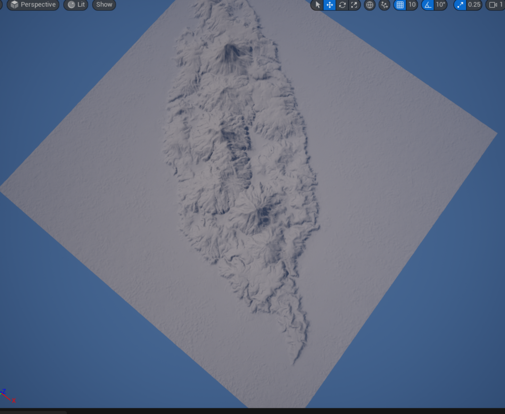
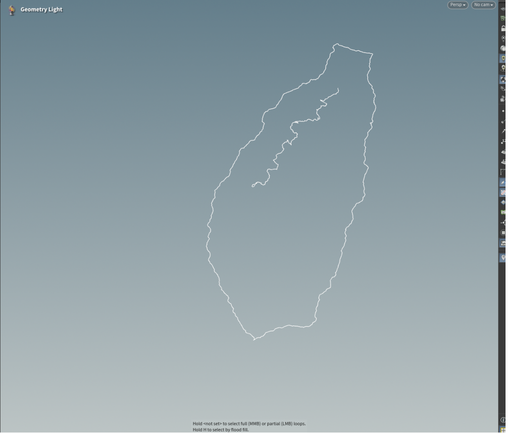

Extreme Sports Game
Introduction
This project is a procedural level generation system for a mountain biking game inspired by "Riders Republic". My primary role was designing the pipeline for realistic terrain generation and an advanced procedural pathfinding system, utilizing Houdini for generation and Unreal Engine 5 for real-time gameplay.

Figure 1: Procedural Terrain & Path System Overview
Tool Development: The Bridge
Real-time Houdini-UE5 Integration
A critical achievement of this project was bridging offline procedural generation with real-time level design. I developed a custom Scriptable Tool using Blueprints in Unreal Engine 5 that communicates directly with the Houdini Digital Asset (HDA).
- Two-Way Data Flow: Designers can manipulate splines and parameters in UE5, triggering instant re-cooks in Houdini.
- Custom Gizmos: Implemented intuitive handles in UE5 for dragging, adding, and modifying path waypoints in real-time.
- Instant Feedback: The HDA recalculates terrain and paths in the background and updates the geometry in UE5 immediately.


Figure 2: Custom UE5 Scriptable Tools controlling Houdini Assets
Procedural Terrain
The terrain system uses a constructive approach. It starts with curve-based silhouette definition, followed by primitive blocking for mountain ranges. Realistic details are added using Worley Cellular noise and hydraulic/thermal erosion simulations to carve out natural flow patterns.

Figure 3: Erosion Simulation & Surface Detailing
Automated Material Layers
A custom auto-material was created in UE5 that reads mask data exported from Houdini. It automatically blends four distinct layers based on the erosion simulation results:
- Bedrock (Steep)
- Sediment (Flat)
- Debris (Slopes)
- Water Flow
VEX Pathfinding System
The pathfinding system is powered by a custom VEX cost engine. Instead of simple shortest-path algorithms, this engine calculates traversal costs based on slope and direction (ascent vs. descent).
- Dynamic Cost Engine: Analyzes local geometry to assign weights. Uphill movement is costlier than downhill.
- Optimization: Uses a "Scatter Points" technique to create a lightweight topological mesh for calculation, avoiding expensive operations on the high-res terrain.

Figure 4: Directional Pathfinding Result
// Calculate base slope cost
float slope_cost = (1-pow(dot(v@N,up),4)) * chf("slope_cost");
// Direction aware costs
float ascent_cost, descent_cost;
if (edge_dir.y > 0) {
// Uphill movement (Costlier)
ascent_cost = pow(dot(edge_dir,up),4) * chf("ascent_cost");
descent_cost = 0;
} else {
// Downhill movement (Cheaper)
descent_cost = pow(dot(edge_dir,up),4) * chf("descent_cost");
ascent_cost = 0;
}
// Aggregate final cost for pathfinding
costs[i] = slope_cost + ascent_cost + descent_cost;
Technologies
Role Info
Focus: Technical Art / Tools
Pipeline: PCG & Automation
Team: 6 Members